to Taiwan!
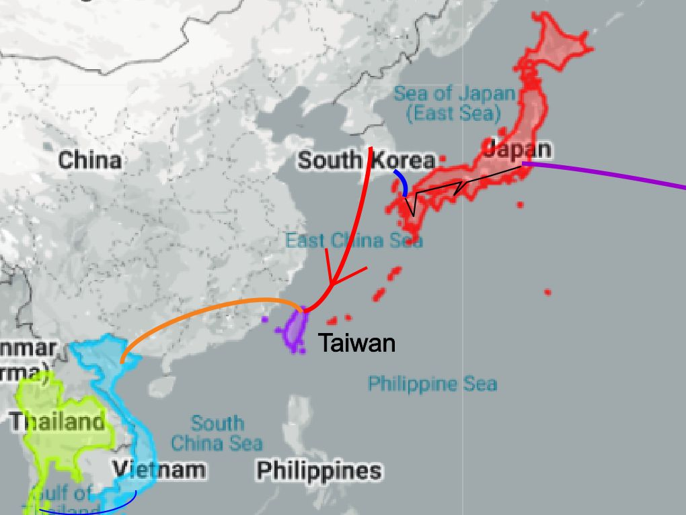
We flew Asiana Airlines from Incheon, South Korea.
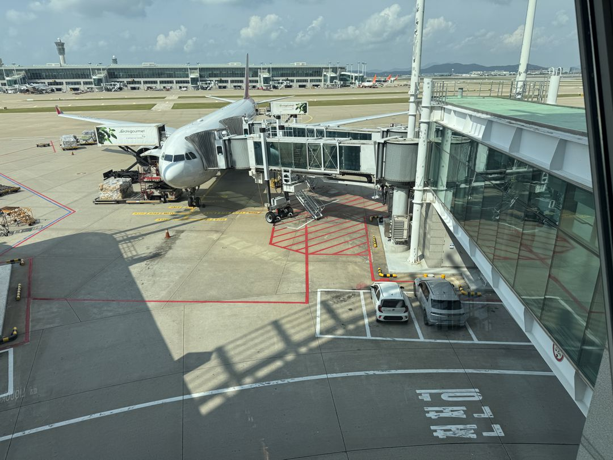
At the Main Metro Station in Taipei.
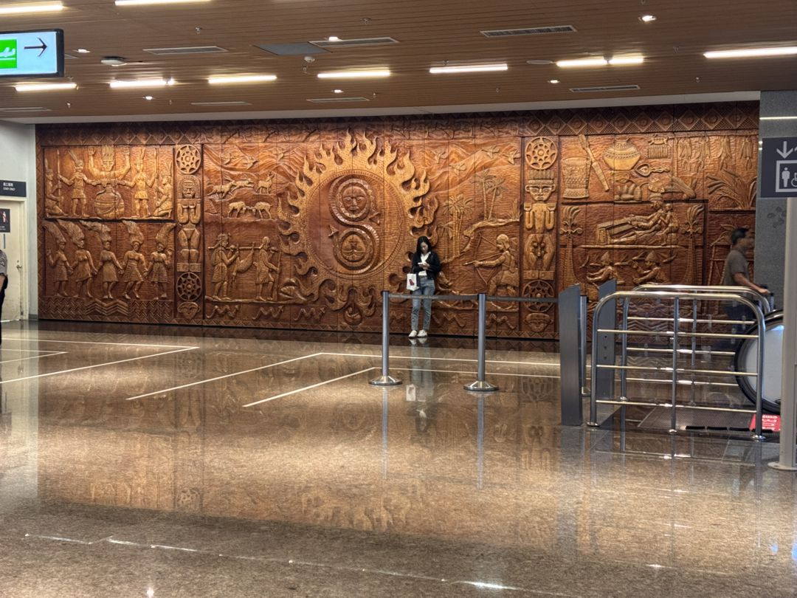
At the New City Metropolitan Park
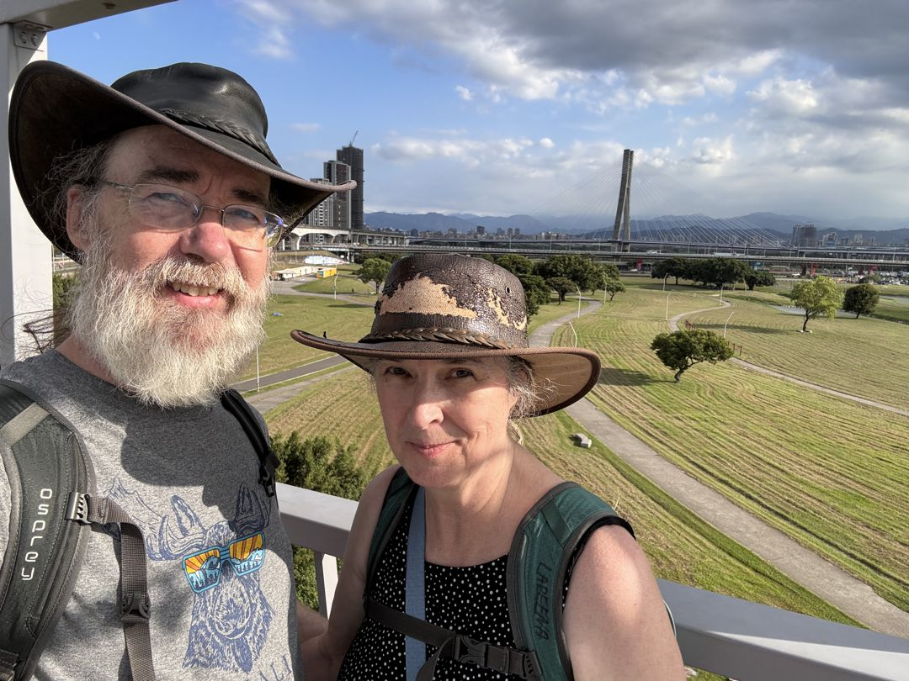
We up in the MegaCity Shopping Center, and got this photo. The glass refracted the sun a bit.
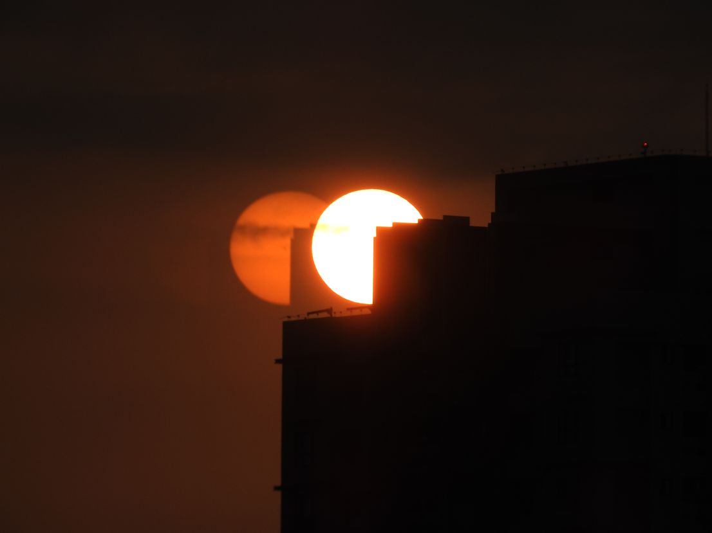
Chiang Kai-shek Memorial Hall
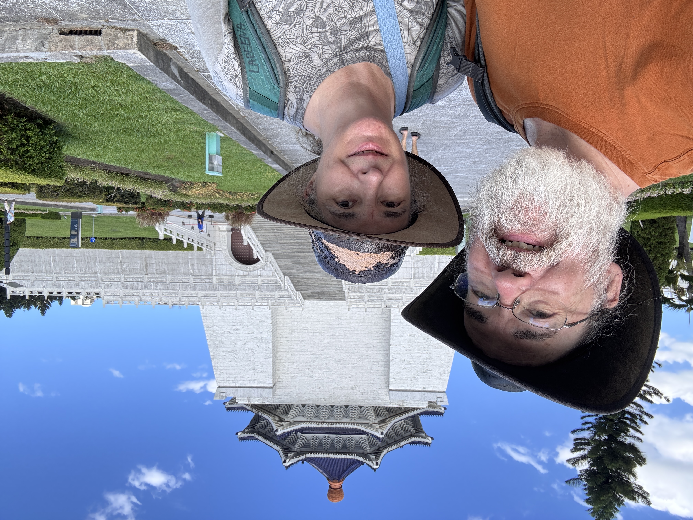
Lareena ate some Stinky Tofu
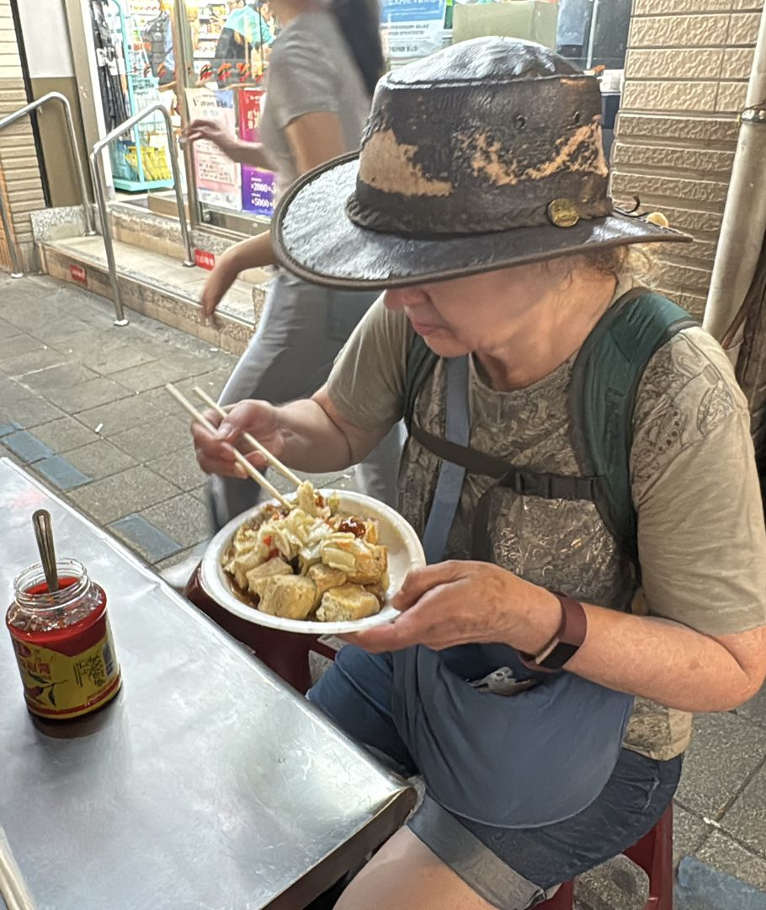
Taiwan Palace Museum
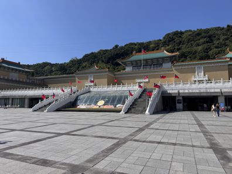
High Speed Rail down to Kaohsiung in the South Friday 10/4, and we'll taking a train along the East coast of Taiwan for a few days visiting the towns of Hualien City and Tiatung. Then back to Kaohsiung, and on to Viet Nam.
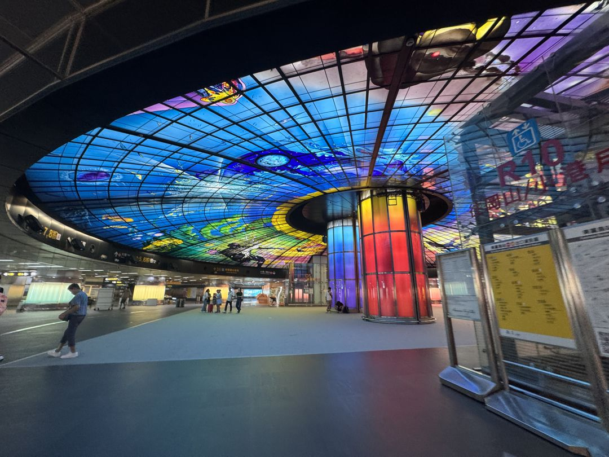
Caught the full moon 10/7 evening near Hualien, Taiwan with my Nikon P-900 2000mm lens
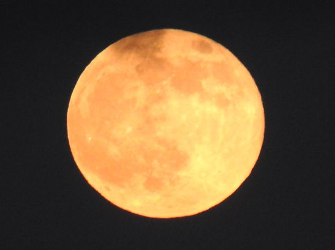
Moved to Tiatung for one night, then trained back to the same Hotel in Kaohsiung. Subway/Bus'd to Cijin on the coast for some evening activities, the sunset, a tunnel, lighthouse and old fort.
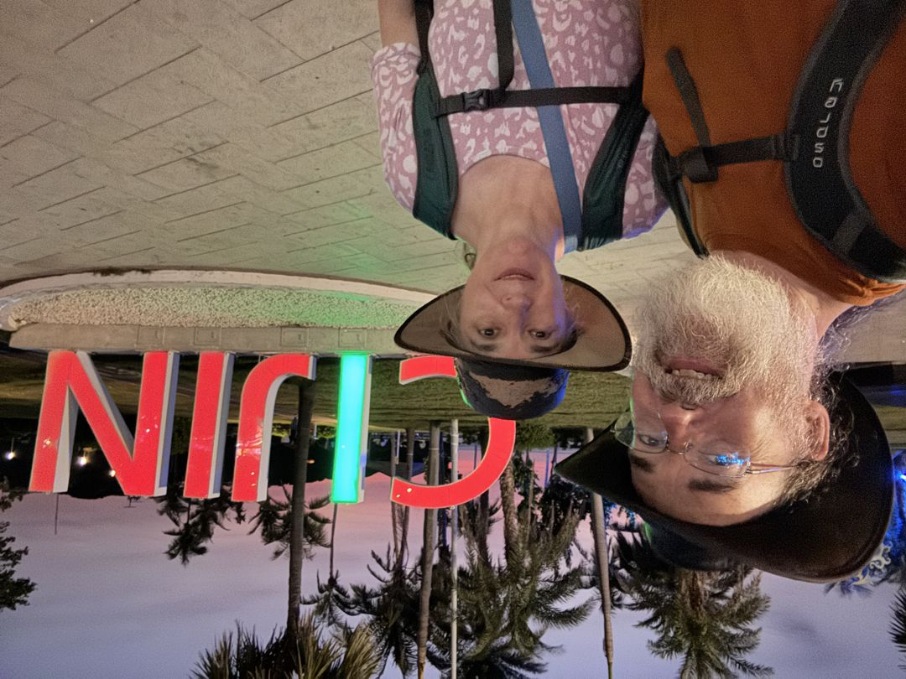
Late afternoon flight on Vietjet to Hanoi 10/10.